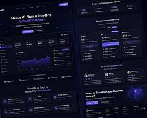
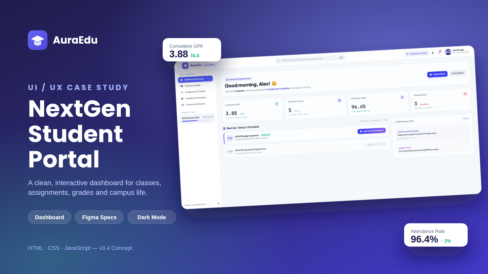
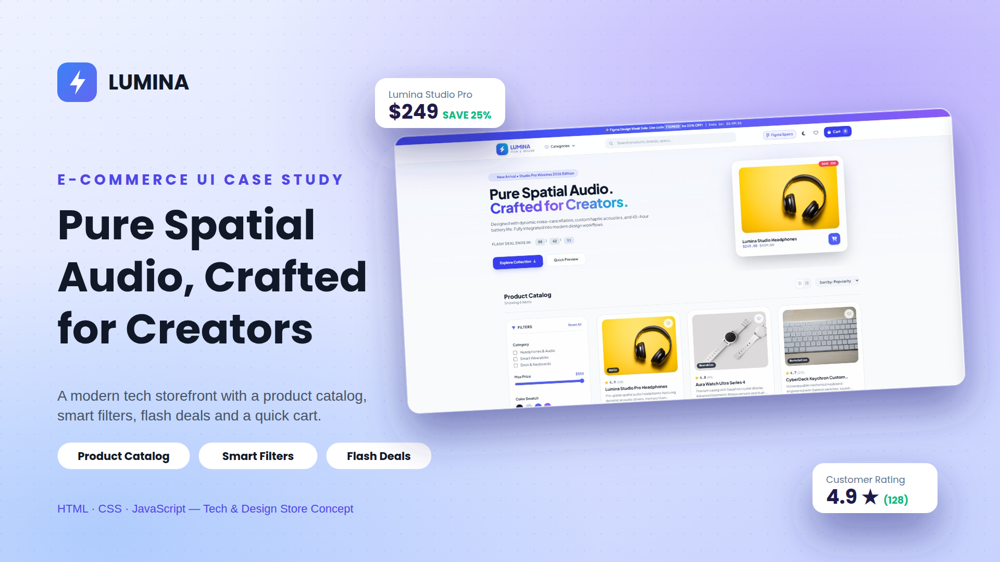
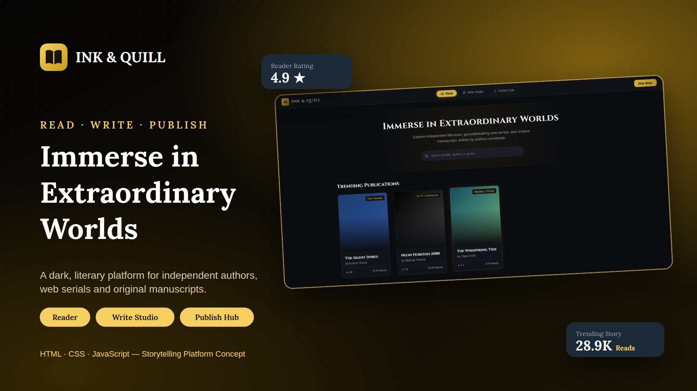
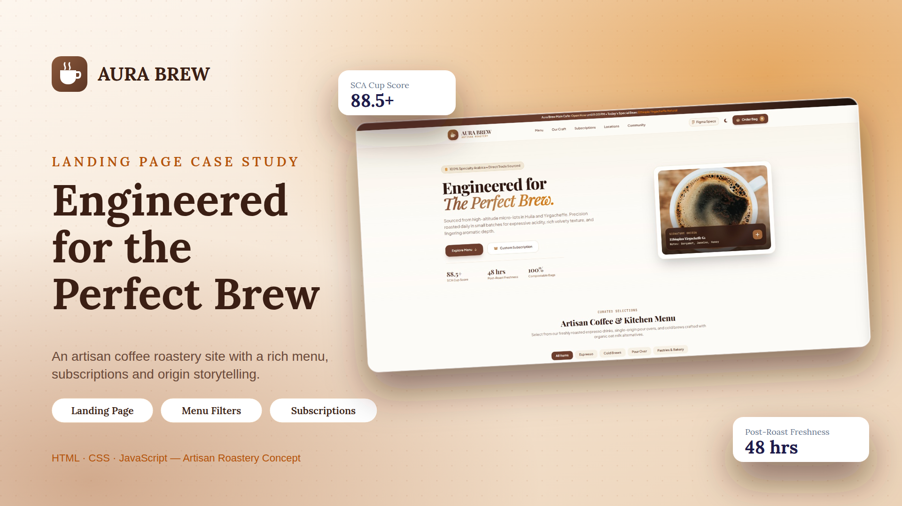
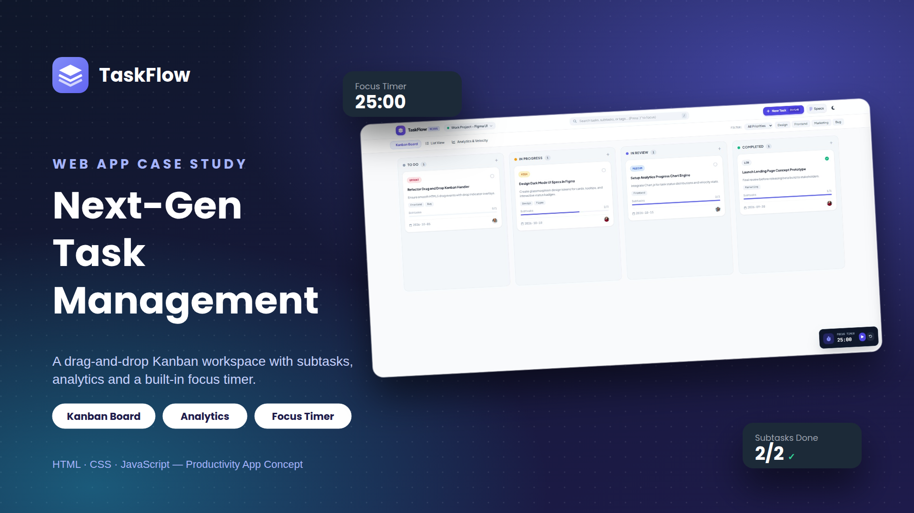

Figma / UI/UX DesignUI/UX Redesign — Mobile App
Redesign concept for a mobile application focusing on modern navigation and simplified checkout.
View Project ↗Passionate Information Technology student focusing on front-end development, user interface design, and creating user-friendly digital projects.

Designing clean, user-centered layouts for mobile and web applications. I turn project requirements into interactive Figma prototypes and clear wireframes.
Converting design mockups into functional, responsive web pages that adapt seamlessly across desktop and mobile browsers.
Crafting intuitive interface concepts for Android and iOS mobile app projects with a focus on simplicity and ease of navigation.
Structuring information system screens and administrative dashboards to present data clearly for academic and practical applications.
A selection of UI/UX designs, web prototypes, and academic projects I have developed.

Figma / UI/UX DesignRedesign concept for a mobile application focusing on modern navigation and simplified checkout.
View Project ↗
Web Design / HTML & CSSA user-friendly dashboard layout designed for students to manage grades and schedules.
View Project ↗
UI/UX / PrototypingInteractive prototype for a local online shop featuring intuitive product filter interactions.
View Project ↗
Front-End DevelopmentIs a collaborative literary haven where aspiring authors refine their craft and readers discover their next favorite book.
View Project ↗
Web DesignMinimalist landing page design for a local cafe highlighting menu offerings and online booking.
View Project ↗
UI/UX DesignClean mobile workspace UI tailored for productivity tracking and seamless daily scheduling.
View Project ↗My academic timeline has laid a strong foundation in visual design, interactive technology, computer science, and creative problem solving.
Data Center College of the Philippines — Baguio
Specialized in user interface design, front-end web technologies, application development, and human-computer interaction principles.
Data Center College of the Philippines — Baguio
Focused on foundational web development, digital arts, graphic design systems, and practical computer programming.
Alejo M. Pacalso Memorial National High School
Built essential core skills in visual communication, creative arts, collaborative projects, and analytical thinking.

Hello! I'm Lyka Althea Alintog — a BSIT student passionate about front-end web development and UI/UX design. I enjoy turning creative ideas into functional and visually appealing digital interfaces.
Through my coursework and personal projects, I continue to build my skills in HTML, CSS, JavaScript, and user-centered design principles to prepare for a career in IT and product design.
Whether you have a project in mind, an opportunity, or just want to connect, feel free to reach out!